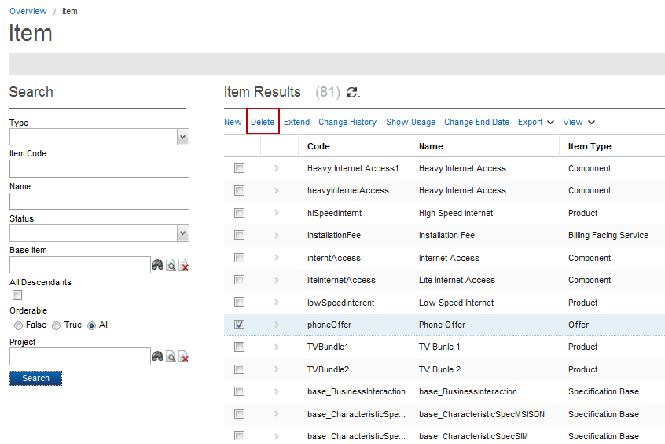

Delete an Item
To delete an Item, follow these steps:
Note: A project must be opened to delete an Item.
- From the Overview page, click Commercial Modeling > Items in the Quick start section.
- The Item page appears; enter the search criteria and then click the Search button.
- The results displays in the results area.
- Select an item from the list (for example, Phone Offer) and then click the Delete button.

- A confirmation dialog appears; select the Yes button.
- A message appears that the selected item has been deleted successfully.
Notes:
- You cannot delete an item that has its Status field set to Active.
- You cannot delete an item that has child items, or it is used as a base item. When you select a base item and click the Delete button, a popup dialog appears. The message displays that the dependent objects must be removed first. Click the Show Usage button to view the dependent objects. To delete the base item, first delete the child items. For example, Silver Package and Bronze Package are child items of Internet Offer. To delete the Internet Offer you must delete the Silver Package and Bronze Package items first.
|